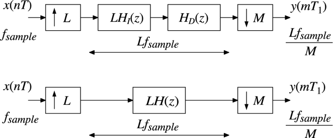
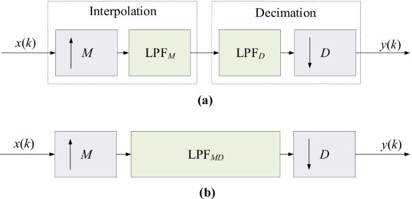

Fractional sampling rate alteration
Inorder to alter the sampling rate by any rational number M/L, first upsample the signal by L smoothen it by a filter with cut off frequency min (pi/M,pi/L) and then downsample by M
If Fsample or Fs is the original sampling rate,now if we want to reduce the sample rate by M/L. the new sample rate would be LFs/M

The change of the sampling frequency by a rational factor L/M, sometimes called the fractional sampling rate alteration or resampling, can be achieved by increasing the sampling frequency by L first, and then decreasing by M. Hence, the sampling rate conversion by L/M is achieved by a cascading factor-of-L interpolator and a factor-of-M decimator as indicated in Figure. Here, factors L and M are positive relatively prime integers, i.e. there is no common integer between L and M.
In the implementation scheme of Figure , the original signal {x[n]} is up-sampled-by-L and then filtered by the lowpass interpolation filter HI(z). The interpolated signal {w[r]} is filtered with the lowpass antialiasing filter HD(z), and then down-sampled-by-M. The sampling rate of the output signal {y[m]} is L/M times the sampling rate of the original signal {x[n]}. Since the interpolation filter HI(z) and the decimation filter HD(z) operate at the same sampling rate, they can be replaced by the single lowpass filter H(z) as indicated in Figure.
The lowpass filter H(z) should be designed to eliminate imaging caused by the up-sampling, and to avoid aliasing produced in down-sampling. With the properly designed filter H(z), the fractional sampling rate conversion can be implemented by using the computationally efficient structure of Figure.
The above picture has two blocks (a) and (b) shows the sampling rate alteration can also be done by interpolation and decimation which is just like upsample and ddownsample , but here we use anti aliasing filter and interpolating filter where (a) shows upsampling with filter , downsampling with filter and (b) shows the complete setup of interpolation and decimation
Even if we use interpolating method or upsampling method, the rate alteration remains same
An example of sampling-rate conversion would take place when data from is transferred . Here the sampling-rate is increased from 44.1 kHz to 48 kHz. To enable this process the non-integer factor has to be approximated by a rational number:
L/M = 48/44.1 = 1.08844
Hence, the sampling-rate conversion is achieved by interpolating by L i.e. from 44.1 kHz to [44.1x160] = 7056 kHz. Then decimating by M i.e. from 7056 kHz to [7056/147] = 48 kHz.